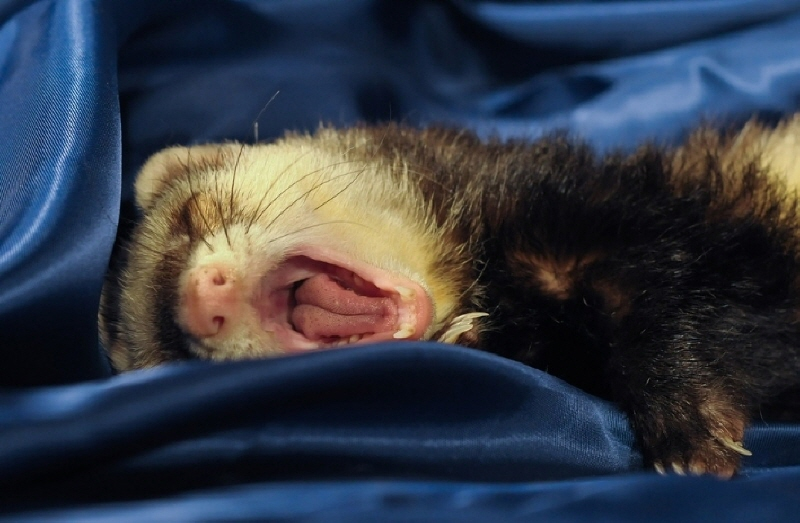
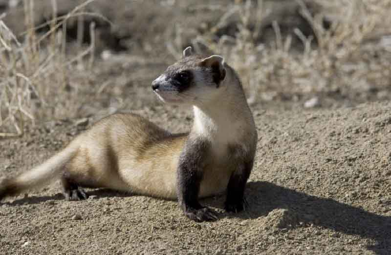
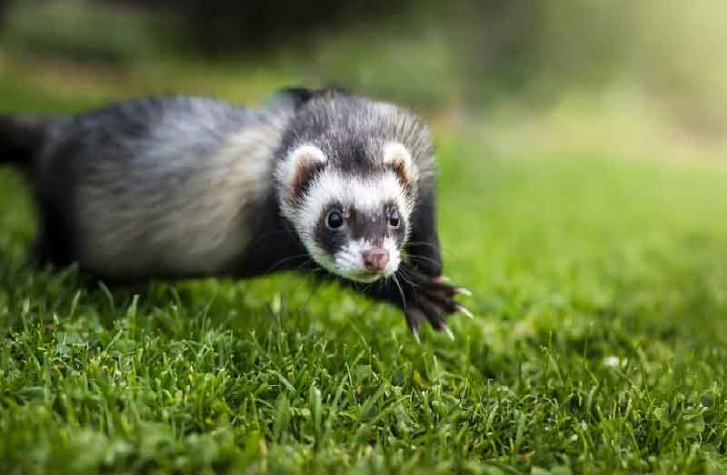
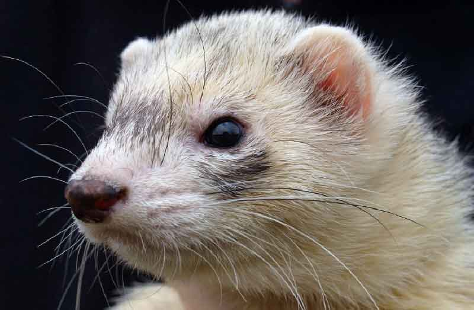
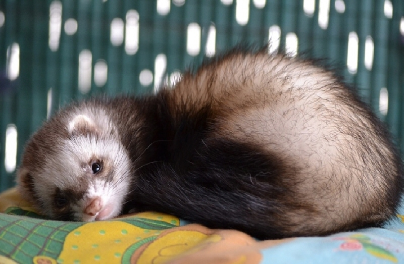

페럿, 키우기 전 알아야 할 사항!
귀여운 족제비로 알려진 '페럿'. 족제비과 중에서도 유일하게 가축화된 동물로 사람을 따를 수 있습니다. 수명은 8~10년 정도 되며, 야행성입니다. 물론, 살아가는 환경에 따라서 달라지기도 합니다. 어떤 동물이든 마찬가지지만, 페럿 역시 키우기 시작 전에 페럿이 가진 특징, 단점 등을 모두 극복할 수 있는지를 생각하고 반려동물로 들여야 합니다. 그러지 않고서는 소중한 생명을 앗아가는 일이 발생할 수 있으니까요. 페럿, 키우기 전 알아야 할 사항! 알려드릴게요.
"꼭 필요한 취선, 중성화"
가정에서 키우기 위해서는 항문에 있는 냄새 주머니인 취선과 중성화가 필요합니다. 페럿은 발정기 때 짝을 만나지 못하면 호르몬 과다분비로 면역력에 문제가 생길 수 있기 때문입니다. 페럿은 면역력에 취약한 동물로 페럿을 치료할 수 있는 수의사가 있는 병원을 알아 두는 것도 중요합니다.
"특유의 냄새"
취선을 제거하는 이유는 페럿에서 나는 냄새를 줄이기 위함인데요. 동물은 저마다 특유의 냄새를 갖고 있듯이 페럿 역시 자신만의 고유 냄새가 있습니다. 게다가 페럿은 육식동물이라 배변 냄새도 상당합니다. 따라서 냄새에 예민하신 분은 신중한 결정이 필요합니다. 만약, 가족과 함께 살고 있다면 가족의 양해를 구하는 것도 잊지 말아야겠죠?
"집 안의 구멍, 주의!"
페럿은 길고 아주 호리호리한 동물로 요리조리 재빠르게 움직일 수 있는 능력이 있습니다. 게다가 호기심도 아주 많은 편이죠. 페럿을 집으로 들이기로 했다면, 집안에 모든 구멍은 막아야 할 필요가 있습니다. 여기저기 호기심으로 쫓아다니다가 주인도 모르는 사이 어떤 구멍으로 빠져나가고 없을 수도 있기 때문입니다. 조금이라도 방심하면 집에 돌아왔을 때 사라진 페럿을 발견할 수도 있습니다. 페럿과 반려인을 위해 항상 안전에 힘써야 합니다.
"전용 사료는 필수"
페럿은 육식동물이지만, 다른 동물과 마찬가지로 사람이 먹는 음식을 절대로 줘서는 안 됩니다. 면역력이 약해 조금이라도 취약한 것이 체내로 들어가게 되면 곧바로 질병에 걸리기 쉽기 때문입니다. 따라서 페럿은 페럿 전용 사료를 급여해야 하고, 간식을 주더라도 사람이 먹는 음식처럼 간이 되어 있으면 안 됩니다. 될 수 있으면 페럿 전용 사료 및 간식을 주는 것이 좋습니다.
페럿은 다른 반려동물에 비해 자주 아프고, 손길이 많이 가는 동물입니다. 그래서 페럿을 입양하더라도 마지막까지 함께 할 수 있다는 생각으로 시작하셔야 합니다. 다른 반려동물도 마찬가지겠지만, 병들어 아프다면 당연히 치료를 위해서도 아낌없이 지원해야겠죠. 어떤 일이든 책임이 반드시 뒤따라야 합니다. 단순히 귀여운 외모만으로 반려동물은 선택해서는 안 될 것입니다.
[출처] 페럿, 키우기 전 알아야 할 사항! ｜ 작성자 땡자